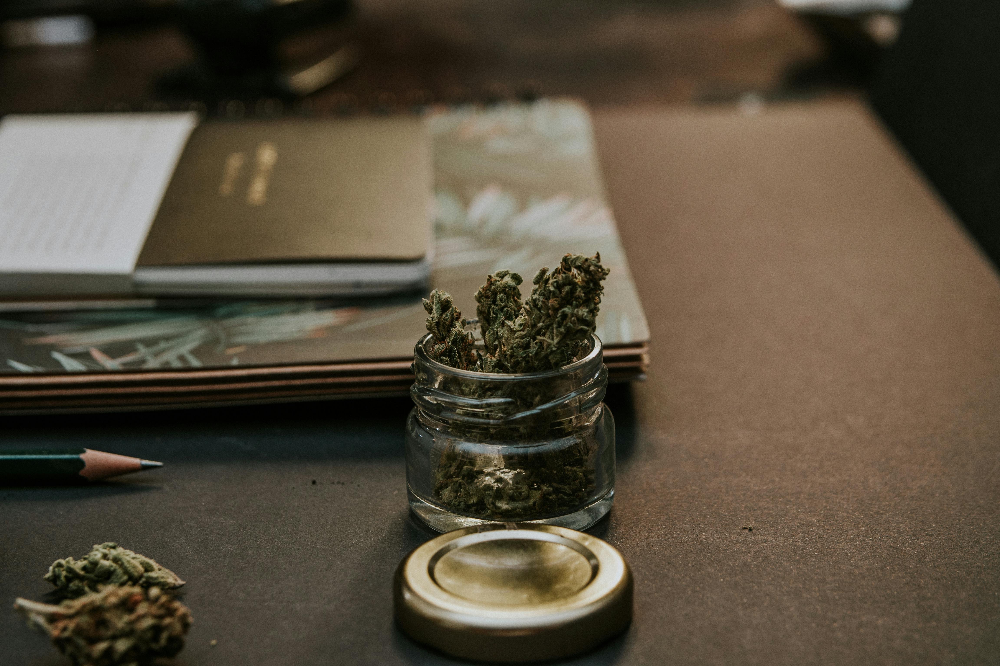

Destroying Marijuana
Home
Help
Contact
About
The process of how to make a blunt
Cannabis: Grind your cannabis into a fine or medium consistency. Cigar Wrap: Obtain a cigar or cigarillo wrap. You can also use pre-rolled blunt wraps, which are available at many smoke shops. Dealing with the Wrap.Cigars/Cigarillos: If using a cigar or cigarillo, you need to split it open. Gently cut or peel the wrap along its length, remove the tobacco inside, and keep the outer leaf intact.Pre-Rolled Wraps: Simply open the package and get ready to fill.Moisten the Wrap: Lightly moisten the wrap with saliva or a bit of water to make it more pliable and easier to roll.Fill: Evenly distribute your ground cannabis along the center of the wrap.Roll: Gently roll the wrap around the cannabis, tucking and sealing the edges as you go. Ensure there are no gaps or loose areas. Sealing:Seal the Edge: Lick the edge of the wrap and press it down to seal it. You can also use a small amount of water if you prefer. Finishing:Toast the Blunt: To help seal the blunt and ensure an even burn, you can lightly toast it with a lighter. Be careful not to burn it.Enjoy: Once it's rolled and sealed, your blunt is ready to smoke. Light one end, take a puff, and enjoy!
Consequences of consuming marijuana
Impaired Cognitive Function: It can affect short-term memory, attention, and learning, which might impact daily activities and academic performance.
Mental Health Issues: In some cases, it can contribute to or exacerbate mental health issues like anxiety, depression, or psychosis, especially in those with a predisposition to these conditions.
Addiction Potential: Although not as addictive as some substances, marijuana can lead to dependence or addiction in some users, characterized by cravings and withdrawal symptoms.
Impaired Motor Skills: It can affect coordination and reaction times, increasing the risk of accidents, especially when driving or operating machinery.
Respiratory Problems: Smoking marijuana can irritate the lungs and lead to issues like chronic bronchitis.
Impact on Youth: For adolescents, whose brains are still developing, marijuana use can have more pronounced effects on cognitive and emotional development.

What is marijuana
Marijuana, also known as cannabis, is a plant that has been used both recreationally and medicinally for thousands of years. It is known for its psychoactive properties, which are primarily due to a compound called tetrahydrocannabinol (THC). THC interacts with receptors in the brain, leading to effects like relaxation, altered perception, and a sense of euphoria. Another important compound in marijuana is cannabidiol (CBD), which does not produce a high but is being studied for its potential therapeutic benefits, such as reducing anxiety or pain. Marijuana typically refers to the dried flowers and leaves of the plant, but it can also be processed into extracts or concentrates. The plant’s origins are in Central and South Asia, where it was historically used for various purposes, including medicinal and ritualistic uses. Today, marijuana is cultivated worldwide, with varying regulations depending on the region. Its legal status ranges from full legalization in some places to complete prohibition in others, with many areas allowing it only for medical use.
weedLeaf
male smoking
Bowl